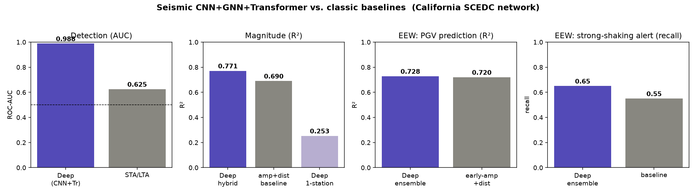

Earthquake ML · California SCEDC network
A shared CNN + GNN + Transformer backbone for earthquake detection, magnitude, and early warning — evaluated honestly against the classic seismology baselines, on real waveform data.
The project began as near-term earthquake prediction from geomagnetic (INTERMAGNET) data. Under leakage-safe, confounder-controlled validation that approach showed no out-of-sample skill — consistent with the contested science. The model was never the problem; the data carried no signal. Pointed instead at seismic waveforms, the same architecture goes from chance to the results below. The lesson: deep learning wins where the task is genuine pattern recognition — and is honest where a simple physics formula already suffices.

| Task | Deep model | Classic baseline | Outcome |
|---|---|---|---|
| Detection | AUC 0.988 | STA/LTA 0.625 | Deep wins, decisively |
| Magnitude (hybrid) | R² 0.771 | amp+dist 0.690 | Deep wins |
| EEW · PGV regression | R² 0.728 | early-amp+dist 0.720 | Tie |
| EEW · shaking alert | recall 0.65 · MCC 0.739 | 0.55 · 0.686 | Deep wins (recall) |
Is an earthquake present in a 30 s window? Learns waveform morphology a threshold detector can't. AUC 0.988 vs 0.625.
Network magnitude from multi-station 3-component traces (response-removed). The GNN over the station graph adds real value: R² 0.57 all-stations vs 0.25 single-station.
From the first 8 s of P-wave, predict the peak shaking that arrives later. Ties the physics on the value, and catches ~10 points more strong-shaking events.
The deep model does not beat the physics where the task is physics (raw PGV value ≈ early-amplitude + distance) — there it ties. It does win where the task needs learned pattern recognition (detection) or a better operating-point trade-off (alerting), and the hybrid magnitude head beats the baseline by adding waveform information on top of the amplitude–distance physics. Every number is an out-of-sample, chronological-split result with the classic baseline shown alongside — no in-sample or cherry-picked-seed figures (the EEW numbers are 5-seed ensembles).
Scope & honesty. California SCEDC, ~800 events / 5–10 broadband stations, magnitudes 3.5–7.1. This is a research prototype demonstrating the architecture on real data, not an operational warning system. Short-term earthquake prediction (will one occur) remains unsolved; this work does detection, characterization, and seconds-ahead shaking estimation — the parts that are tractable.